Nyzo version 601 (commit on GitHub) provides a configurable global maximum on concurrent connections in MeshListener. It also provides a per-IP taper to improve distribution of resources when connection load is high.
This version only affects the verifier. This is the only run mode that uses MeshListener.
The changes in this version are due to a bug report by a member of the community. This member provided the following address for receiving a bounty:
In MeshListener, the maximumConcurrentConnectionsForIp constant was renamed to maximumConcurrentConnectionsPerIpAbsolute. The misspelling of this parameter in the preferences file was corrected, and the default value changed to 5. The higher default value of this constant, intended to avoid blacklisting of a sentinel in exceptional cases, is no longer necessary due to automatic whitelisting now performed by the sentinel.
The comment explains the roles of the other new constants. In addition to a global cap on concurrent connections, there is also a taper on the per-IP cap to improve resource distribution. It would make no sense to reject a single connection from one verifier while allowing multiple connections from another verifier.
As the comment notes, whitelisted verifiers are not subject to any connection limitations, but they do count toward the number of active connections.

Some static fields were added for storing information about the operation of the MeshListener. Accessors were added to allow these fields to be added to the StatusResponse.

The mergeFunction now returns null for counts of 0. This allows the map to be continuously cleaned, only tracking IP addresses that have active connections.
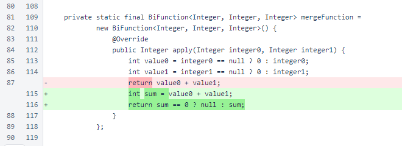In MeshListener.processSocket(), the global maximum and the dynamic maximum per IP are now enforced. The minimumConnectionThreshold stores the lowest per-IP maximum to illustrate throttling.
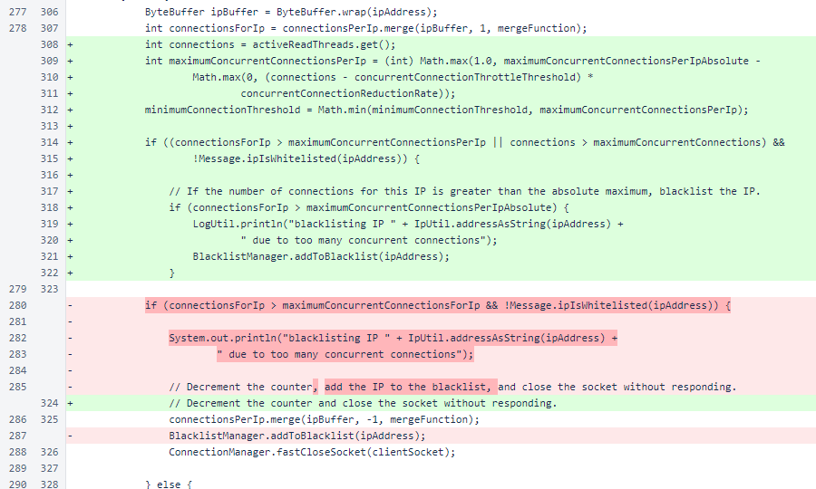When activeReadThreads is incremented, an accrued maximum is stored in maximumActiveReadThreads for inclusion in StatusResponse.
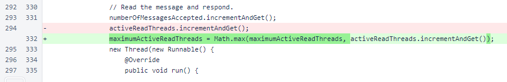The connectionsPerIp map no longer needs to be cleared. Values of 0 are now continuously removed due to the updated mergeFunction.
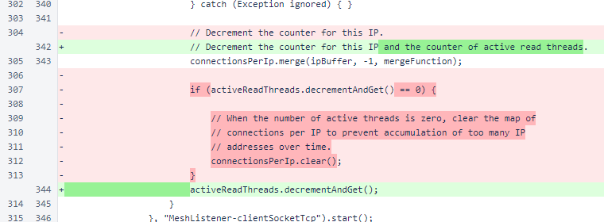At the end of MeshListener.processSocket(), the current size of the connectionsPerIp map is stored in the ipMapSize field for inclusion in the StatusResponse.
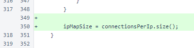Some unnecessary imports were removed from NewBlockMessage.
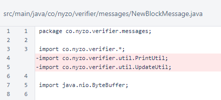The new MeshListener metrics are now included in the private version of StatusResponse.
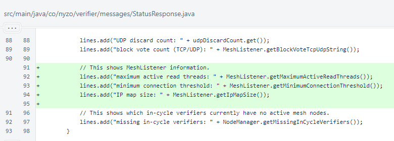These changes required substantial testing. This version includes one of the scripts developed for testing, MeshListenerStressScript. This script takes advantage of automatic whitelisting to allow a single IP address to place significant strain on a verifier to cause triggering of both throttling and the global connection cap.
The script requires a host name or IP address and the private key of the target verifier. The number of requests, which defaults to 100, may also be specified.
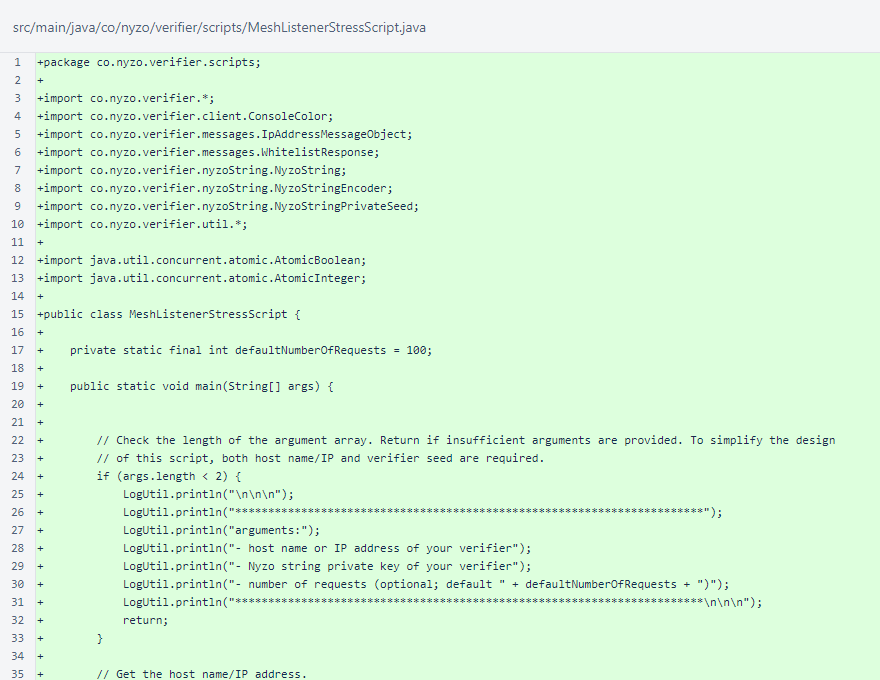The arguments are processed, and the script exits prematurely if a valid private key is not provided.
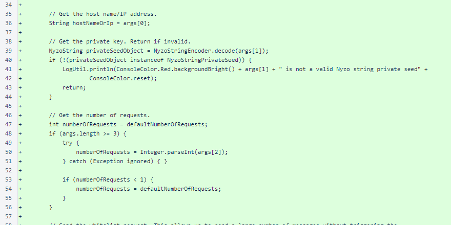The script first whitelists itself to avoid triggering the blacklisting mechanism.
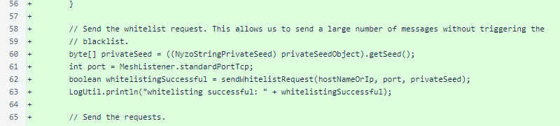The script sends concurrent requests of type FrozenEdgeBalanceListRequest_45. This request type was chosen because it requires a large, computationally intensive response and because it is easy to send.
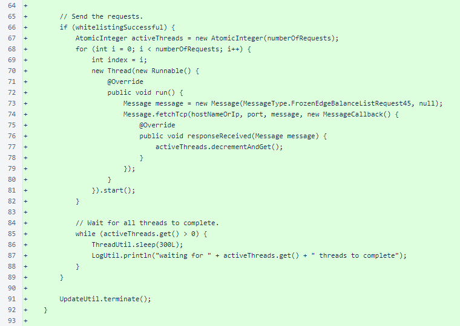The helper method sendWhitelistRequest() negotiates the two-step automatic whitelisting process with the target verifier.
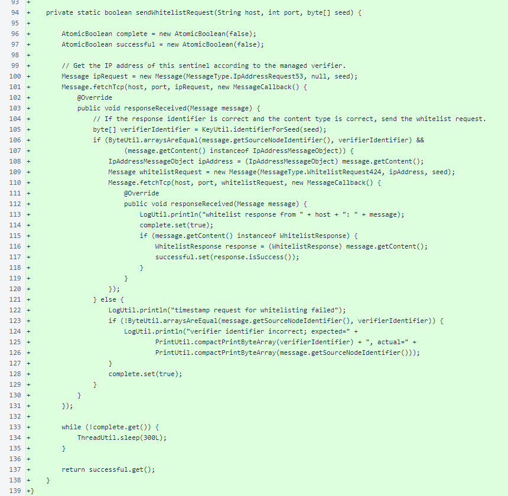When running this script against ⛵ Argo 746 with a request count of 1000, both throttling and global limiting were observed from other verifiers that had not been whitelisted. The private StatusResponse from ⛵ Argo 746 confirmed that the MeshListener class was responding as expected.
...
maximum active read threads: 1092
minimum connection threshold: 1
IP map size: 5
...
This script is an easy way to test whether your verifier will perform well under heavy connection load. With an appropriate argument for request count, from a single location, you can force your verifier to maintain more active connections that it would maintain in normal operation.
Of course, this script could also be used to disable your verifier. This does not enable malicious attacks, because the script requires the target verifier's private key. The script should, however, be used with care.